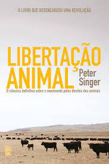
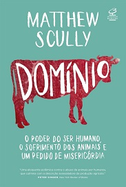
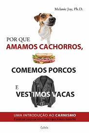
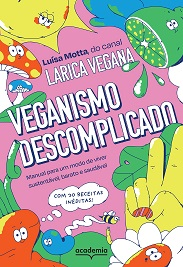

|

Libertação Animal-Peter SingerO livro de Peter Singer tem o seguinte subtítulo: “O clássico definitivo sobre o movimento pelos direitos dos animais”. Foi publicado pela primeira vez no ano de 1975, com o objetivo de conscientizar as pessoas a respeito da maneira como o ser humano trata os animais, expondo a realidade da indústria pecuária e dos testes de laboratório. |
A Política sexual da carne- Carol J. AdamsEssa obra une o feminismo e o vegetarianismo fazendo uma ligação entre a dominância patriarcal, a cultura de violência contra a mulher e o ato de comer carne de origem animal. Foi publicado pela primeira vez em 1990, após mais de uma década de pesquisas. |

Domínio- Matthew ScullyNele, Matthew Scully realizou uma reportagem sobre as relações entre seres humanos e animais na sociedade global capitalista, movida por interesses financeiros. Algumas das situações que o autor expõe são o turismo de caça e uma conferência da Comissão Baleeira Internacional que desejava criar métodos mais letais para conseguir mais recursos marinhos vivos. Também aponta a dura realidade das fazendas industriais, que tratam os animais com crueldade. |
|

Por que amamos cachorros, comemos porcos e vestimos vacas- Melanie JoyA ideia do livro é diferenciada: em vez de explicar os motivos pelos quais não deveríamos comer carne, procura informar os motivos pelos quais as pessoas comem esse produto. Dessa forma, o objetivo é mostrar como as pessoas podem fazer escolhas mais conscientes. “Ignoramos as evidências de que os animais têm consciência e que não precisamos de carne em nossa alimentação, pois, na maioria das vezes, vivemos mais tempo e melhor sem ela”, é explicado na página do livro. |
Comer animais-Jonathan Safran FoerEsse é o primeiro livro de não ficção do autor Jonathan Safran Foer. Ele pesquisou durante três anos para criar a obra, tendo investigado a pecuária industrial nos Estados Unidos e a pesca em larga escala. Tudo demonstrando as implicações desses atos para o meio ambiente. Na página da editora, é afirmado: “Safran Foer propõe um debate ético sobre o consumo alimentar dos animais. Ele defende o vegetarianismo como uma opção mais sensata de pecuária e um onivorismo mais honrado, que traga benefícios para o meio ambiente”. |

Veganismo descomplicadoNeste guia descomplicado, a cozinheira e empresária Luísa Motta apresenta o veganismo, um modo de viver que faz bem para você sem promover a crueldade contra os animais. Através de histórias pessoais e muitos fatos, a criadora do canal Larica Vegana ensina o que leva alguém a mudar seus hábitos, as maiores dificuldades do processo, como vencê-las, a verdade por trás de alguns tabus e os benefícios de uma dieta à base de plantas. Tudo isso mostrando que um prato de comida pode refletir muito sobre como você se cuida e ajuda o planeta em que vive. |
Podcast apresentado por Ricardo Lima e Caroline Soares. São apresentados debates sobre o lado verde da força.